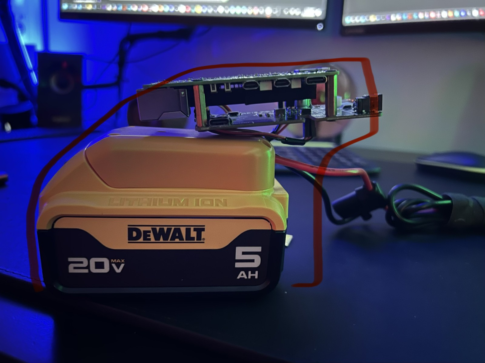
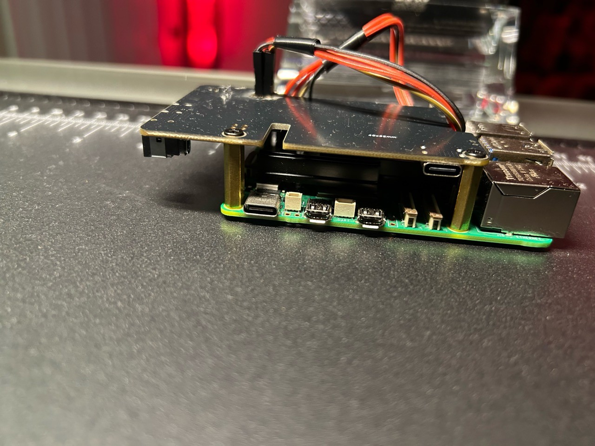
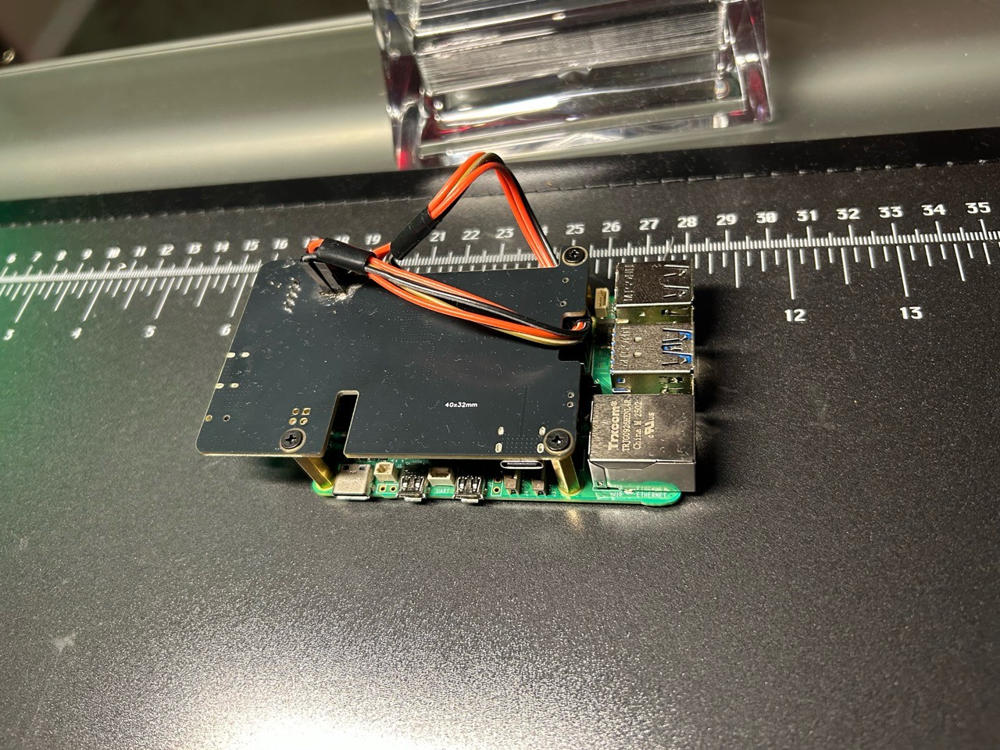
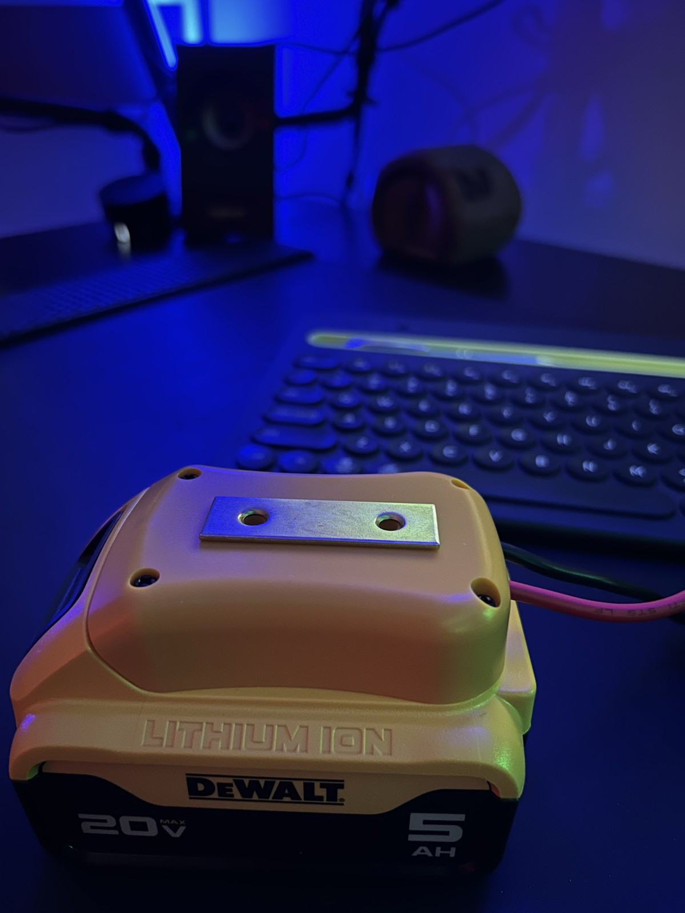
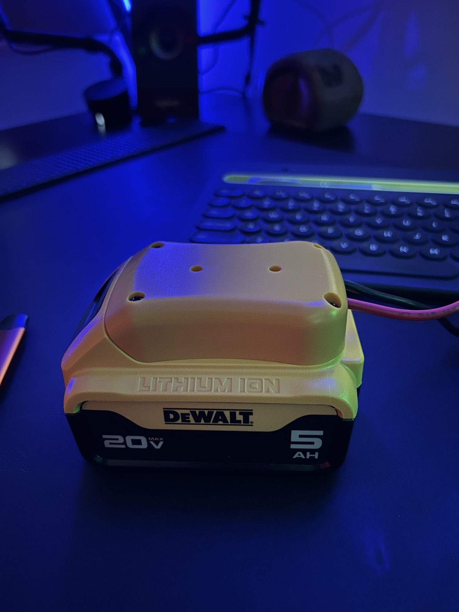
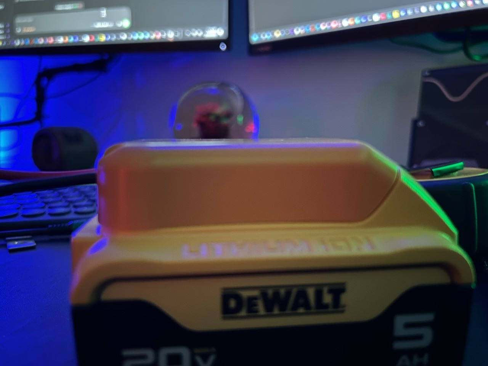
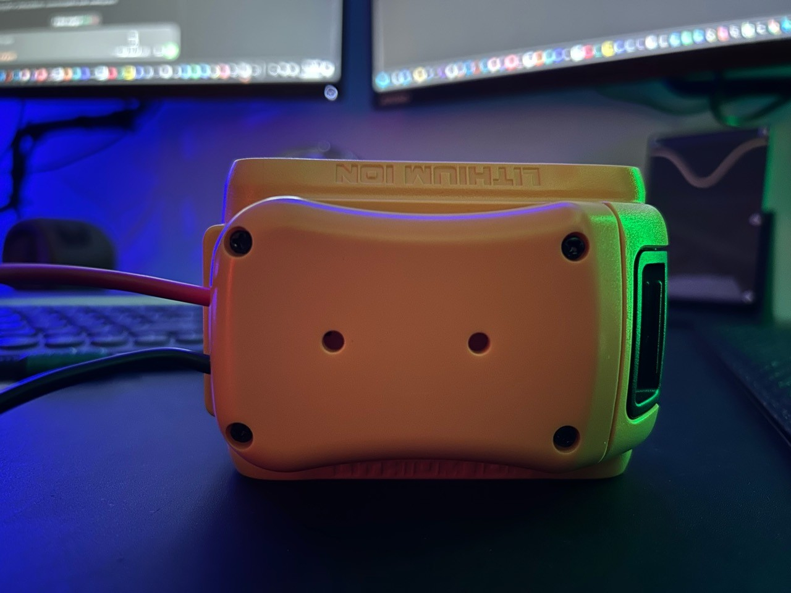
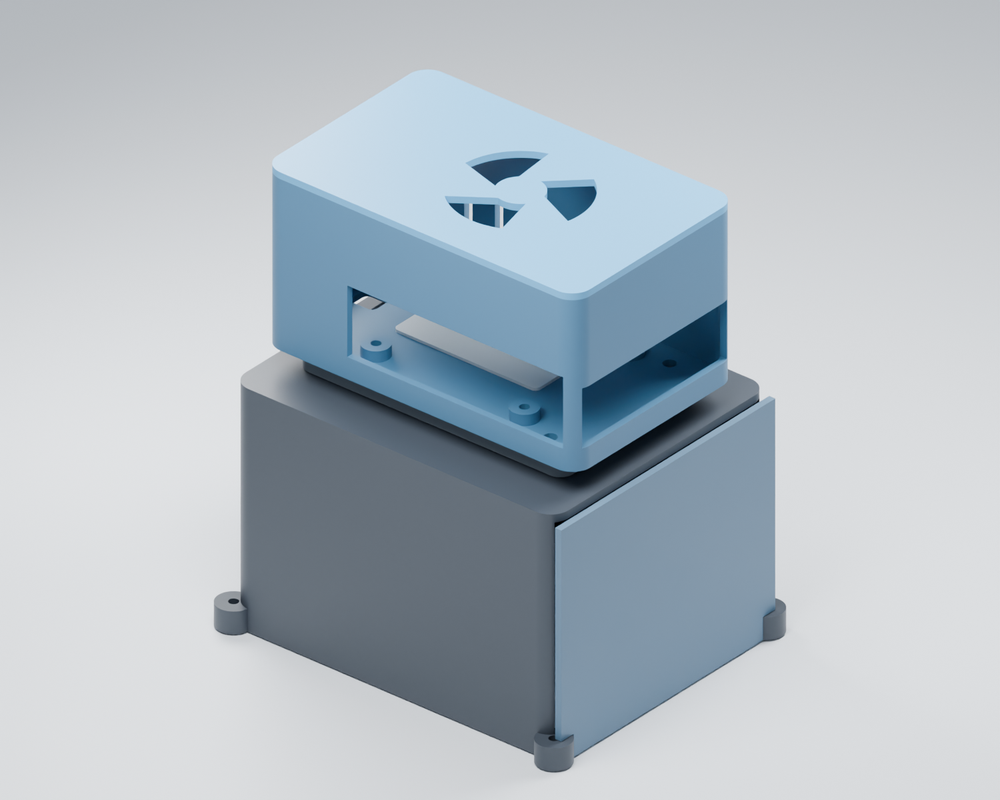
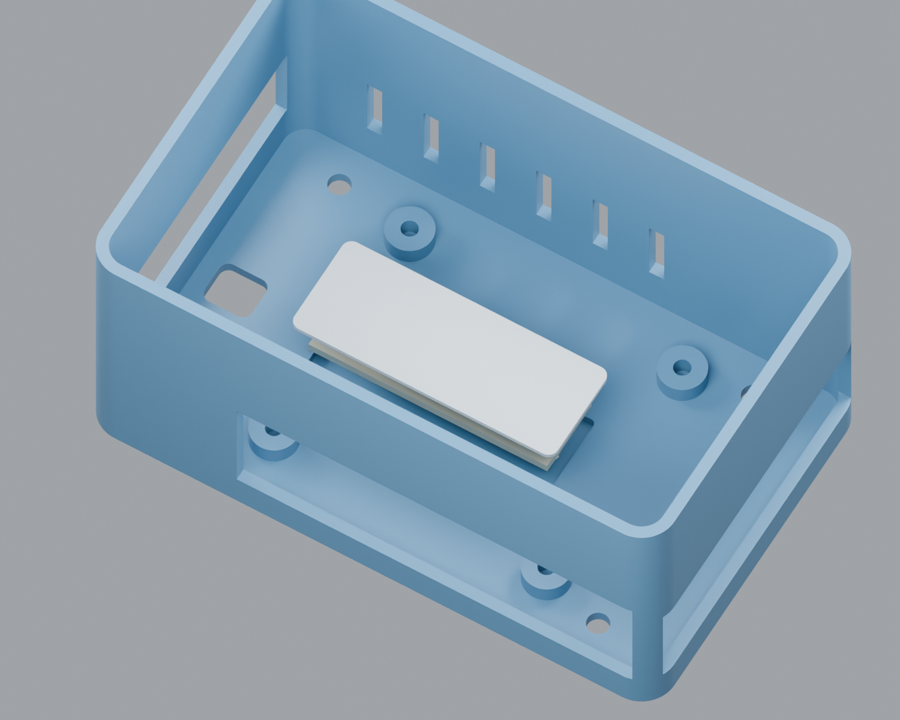

MXGenius apparatus · updated October 16, 2026
XDrive V1: enclosure design and field readiness
Current stage: drill-style enclosure and grip concept. The goal is the first field-testable XDrive V1: an enclosed Pi/52Pi unit that plugs into its battery, connects to the intended network, and operates as an MXGenius appliance. The latest direction embraces the DeWalt black/yellow tool aesthetic: battery as the foot, a reinforced drill-style grip near the balance point, and the Pi/52Pi in an upper electronics housing. A retention strap remains required. The owner is remodeling the enclosure; handle geometry, exact orientation and weight distribution remain to be tested. The boxy R04 CAD and the earlier tapered-body outline are references, not models of the new drill-style V1.
The October 7 design, slicing, and viewer work remains part of the history. The new photos and measurements replace the old side-by-side board and large wire-loop assumptions for this enclosure. They do not establish completed field acceptance.
Current product architecture
The proposed V1 combines the XDrive electronics head and handle in an integral body, with installed power wiring routed through a dedicated channel in the grip and service access retained where needed. Drill-style side vents and side-mounted MXGenius logos shape the upper housing. USB ports form the working-end interface; the flared rear accommodates the electronics and wiring. The proposed palette keeps the MXGenius blue/white identity on the upper housing and DeWalt black/yellow around the grip and battery connection.
Battery-to-handle reinforcement: retain the steel plate inside the enclosure at the battery shoe/handle joint. Increase thickness locally around its mounting recess, provide insulation and matched recessed hardware, and verify the complete load path with the actual battery. Final recess dimensions, wall thickness and joint strength remain to be established through fit and load tests.
The longer-term platform idea keeps a common electronics head and handle while using a separately engineered footer and matching power interface for each battery family. Green Makita and red Milwaukee variants are future concepts, not established compatibility. The current V1 scope remains the DeWalt battery configuration.
What is established, and what changed
| Area | Current evidence | Next acceptance |
|---|---|---|
| Pi / 52Pi assembly | Photos show the current stacked hardware on stock mounting points. Supplied electronics footprint: 4¼ × 2½ in (107.95 × 63.5 mm). Original rigid stack height was about 1 in; latest required height is 2 in including wires (50.8 mm). | Use the actual assembly to set connector bezels, wire bends, clearances, and service access. Preserve the successful Pi mounting datums. |
| Connector layout | Power at the upper end of the supplied photo, USB/Ethernet at the back, USB-C on the sides. Extra wiring room is primarily overhead; the opposing side needs little clearance. | Verify plug insertion, removal, collar clearance and strain relief before closing the case. |
| Battery and purchased footer | Pictured battery is labeled DeWalt 20V MAX / 5 Ah. Operator-supplied battery footprint: 4½ × 3½ in (114.3 × 88.9 mm). Installed height with the connecting footer: 3 in (76.2 mm). Connector alone: approximately 2½ × 3½ × 1 in (63.5 × 88.9 × 25.4 mm); its height is already included in that installed measurement. Exact taper replication is unnecessary. Latest direction uses the battery as a tool-style foot and embraces its appearance instead of requiring every yellow area to be hidden. | Integrate the purchased footer into the reinforced grip/base while preserving latch access and removal travel. Reserve extra room behind its wire exit, blending this into a flared handle base; establish the allowance from actual bends and strain relief. Exact battery/adapter SKU and mounting-hole spacing remain unconfirmed. |
| Steel reinforcement, grip, strap and standing surface | Nominal 2-inch mending plate shown on the real adapter. Interior steel reinforcement, insulation, recessed hardware and custom bumper/foot mounts remain design requirements. The steel anchor may be offset. A drill-style grip replaces reliance on holding the blocky shell; a retention strap remains required because the concentrated weight tends to slip from the hand. | Design grip and strap around the combined balance point, twisting load and stable battery/feet footprint. A structural path should connect the battery shoe, handle and upper housing without loading the PCB mounts. Exact strap type and anchors remain to be chosen. Preserve power-plug, wire-bend and cooling access, then test a weighted mockup for holding, tilting and carrying. Existing pockets do not establish final strength or comfortable retention. |
| Enclosure shape and R04 reference | Latest concept: drill-style grip with battery below and electronics above, retaining tapered transitions where useful. Earlier boxy R04 aid: seven exported solids, including an alternative blank lid; six default assembly parts. CAD checks preserve the Pi mounts and clear the measured battery envelope in that draft only. | Model the drill-style V1 arrangement, set its exact orientation, place the icon and refine vents, reinforcement, ports and retention. Earlier R04 geometry checks do not validate the new form. No drill-style CAD or new field-enclosure toolpaths are asserted by this record. |
| Existing compute/power baseline | The shared board records Pi appliance 0.3.1-poc.29 hardware acceptance and the earlier 18-hour battery-runtime baseline as completed. Those records are preserved. | Repeat the relevant power, network, thermal and recovery checks in the finished V1 enclosure. The earlier baseline is not an acceptance test of this new assembly. |
Current hardware photos and design references


















V1 field-test gate
- Model the drill-style enclosure. Develop the integral head/handle body, internal wire channel, side vents/logos, working-end USB layout and flared rear. Resolve the DeWalt footer and reinforced grip, using tapered transitions where useful. Confirm real board supports, overhead wire space, ports, service access and cover retention.
- Verify the battery interface, strap, grip and balance. Resolve anchors from the actual battery-to-handle-to-head load path, weight distribution and support footprint; match the footer, steel reinforcement, insulation and hardware. Keep power-plug, wire and cooling access clear. Test grip and retention strap on a weighted mockup while holding, tilting and carrying. Confirm battery release/slide travel, secure retention and stable feet/bumper placement.
- Check the assembled power path. Record the installed components and protection; verify representative operation, secure wiring, thermal behavior and the disconnect/shutdown procedure.
- Prove networked operation. Start the battery-powered V1 unit, join the intended network, reach the MXGenius appliance/status workflow, and record image/service versions and observed health. Exercise reconnect and recovery.
- Record field evidence. Capture photos of the finished unit, the tested configuration, results, remaining defects and the decision to accept or revise. Until then, V1 field acceptance stays open.
Still open: final enclosure geometry, exact dock/plate fasteners, cover/latch retention, structural loading, cooling and the completed battery-powered network test. The R04 draft is not a validated field-ready or printer-ready V1.
Earlier work retained
The October 7 record retains the Rev3 and FLIR exploded-model history, color-separated badge work, Adventurer 3 print packs and Bambu logo-print progress. All ten existing videos remain in Highlights. Rev3 and its slices are historical design references for XDrive; they do not describe the current stacked V1 enclosure. No new FLIR, logo-completion or Remote Witness result is asserted by this update.